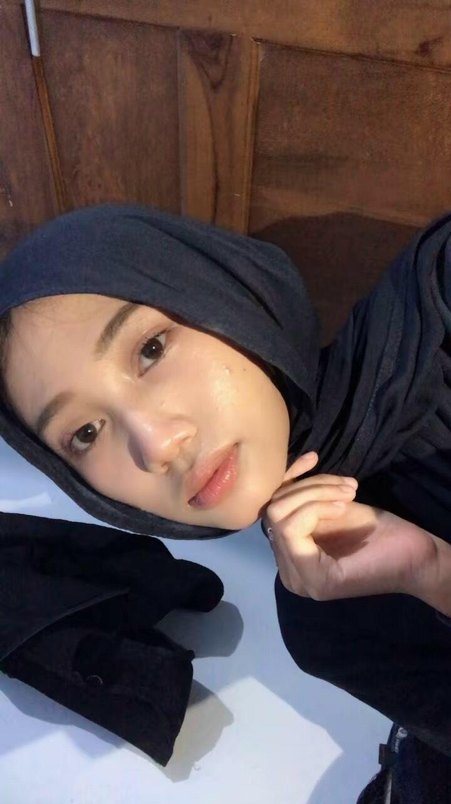

Mahasiswa

Saya Devi Yulianti saya mahasiswa yang sedang menempuh pendidikan jurusan Teknik Informatika di Universitas Muhammadiyah Ponorogo. Saya mudah beradaptasi, dan terbiasa bekerja sama dalam tim. Memiliki semangat untuk bekerja hal baru serta mencoba berbagai peluang untuk berkembang, baik di bidang akademik maupun non-akademik.
Program Studi Sistem Informasi
Jurusan IPA
Berpartisipasi dalam kegiatan sekolah, bekerja sama dengan anggota lain, membantu koordinasi kegiatan, serta menjalankan tanggung jawab yang diberikan.
Berpartisipasi dalam kegiatan organisasi, bekerja sama dalam tim, dan bertanggung jawab terhadap tugas yang diberikan.
Bertugas mengurus administrasi organisasi, seperti membuat surat, mencatat hasil rapat, mencatat iuran 2 minggu sekali, dan membantu ketua dalam kegiatan Karang Taruna.